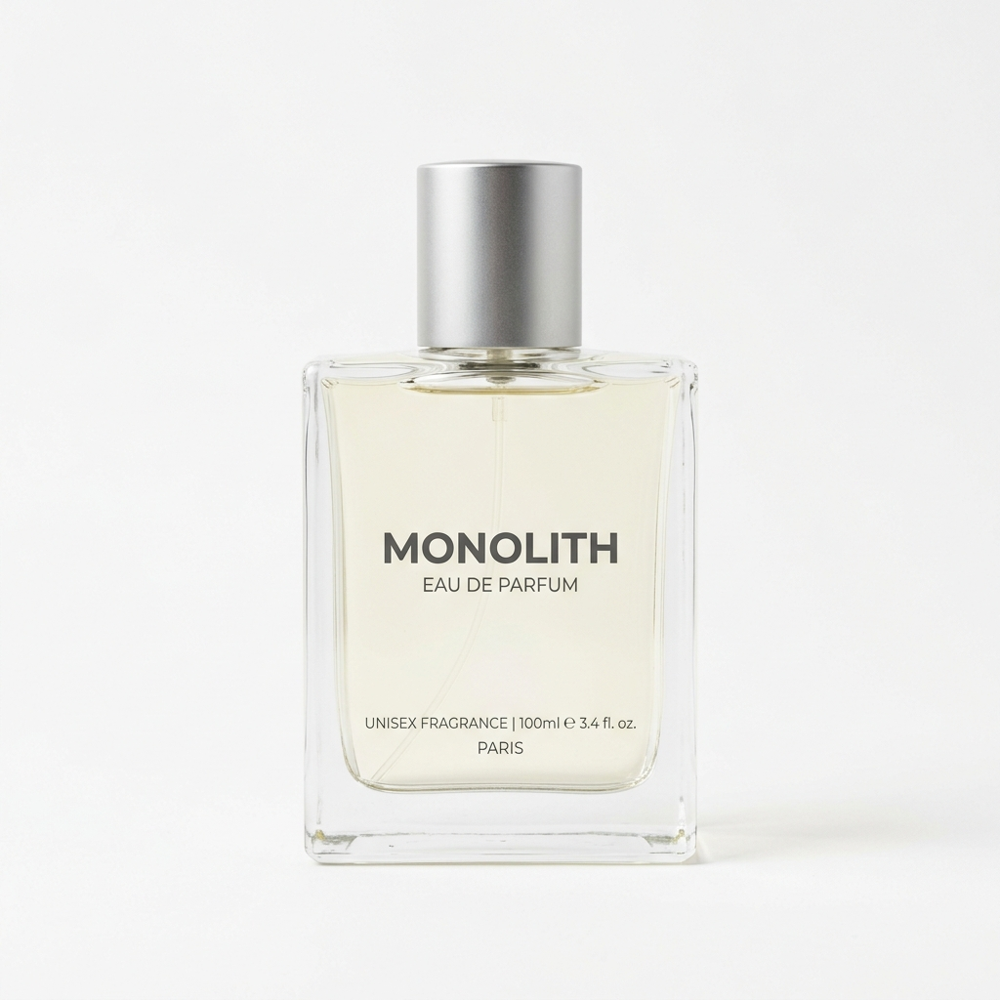

我們的故事
Aura 成立於 2026 年，致力於為追求生活品味的您，打造獨一無二的頂級香氛。我們相信，香水不僅僅是氣味，更是個人靈魂的延伸與情感的記憶。
每一款 Aura 香水都由世界頂級調香師精心調配，嚴選全球最珍貴的天然香料，歷經數千小時的淬鍊，只為呈現最純粹的嗅覺藝術。

越是簡單，悅氏不簡單
悅氏重視環保，擁有最佳化之生產流程，秉持以消費者健康為宗旨，不斷追求創新與卓越，目的就是讓每個人方便的享用大自然健康的產品。無論您是個人飲用還是企業採購，我們都提供完善的【礦泉 水 批發】服務，滿足各種需求。許多消費者在網路上給予【礦泉 水 推薦】好評，正是因為悅氏對品質的堅持不打折。
★來自雪山山脈的悅氏礦泉水
悅氏礦泉水水源地緊鄰雪山國家原始森林保護區，集水區上溯15公里完全沒有人為污染。悅氏的水源是經由雪山山脈火山頁岩層層濾淨後自然湧出，水質不但天然純淨，而且蘊含均衡適量的鈣、【鎂 礦泉 水】特有的礦物質、鈉、鐵、氟等，是大自然最珍貴的恩賜。我們也提供【客 製 化 礦泉 水】服務，讓企業能夠在瓶身印製專屬標誌，打造獨一無二的品牌形象。
★為了每滴水的純淨悅氏買下一片山，24小時專人守護看似簡單的好水，都來自於悅氏不簡單的堅持。
★專業製程的悅氏礦泉水
悅氏為了保存100%的天然礦泉原味，自建廠之始即堅持自行製罐，是全國第一家裝置吹瓶器的【礦泉 水 品牌】。從整列、清洗、消毒、貼標、充填，全部選用先進國家的機器設備，悅氏集合人與科技的力量，就是要提供消費者最自然純淨的健康【礦泉 水 330ml】以及多種規格選擇。無論您需要【330ml 礦泉 水】隨身攜帶，或是【礦泉 水 6000ml】的大容量包裝，我們都能滿足您的需求。如果您偏好環保包裝，我們也有【玻璃 瓶 礦泉 水】可供選擇，讓您品味純淨的同時也愛護地球。
針對不同場合，悅氏提供多樣化的產品線。喜愛清爽口感的消費者，可以選擇我們的【氣泡 礦泉 水】或【天然氣 泡 水】；需要大量採購的企業客戶，我們提供【礦泉 水 一 箱】起的訂購方案，並且有透明的【礦泉 水 批發 價格】讓您輕鬆規劃預算。對於講求生活品質的您，【高級 礦泉 水】系列將帶給您極致的飲水體驗。
居家或辦公室使用，我們有【桶 裝 礦泉 水】與【大桶 礦泉 水】可供選擇；外出時，【小瓶 礦泉 水】與【小瓶 礦泉 水 批發】方案讓您隨時補充水分。特別推薦【小瓶 礦泉 水 250ml】輕巧包裝，適合會議或活動使用。若您追求異國風味，【越 式 礦泉 水】與【進口 礦泉 水】系列也能豐富您的選擇。
悅氏更以符合礦泉水TQF、HACCP、及ISO22000國際驗證的作業流程，來管制整廠的生產運作，並確實要求全廠人員在工作崗位上為「水的天然純淨」把關。我們還提供貼心的【礦泉 水 送 到家】服務，讓您無需出門就能享用來自雪山的純淨好水。無論您需要什麼規格、什麼數量，悅氏都是您最信賴的選擇。